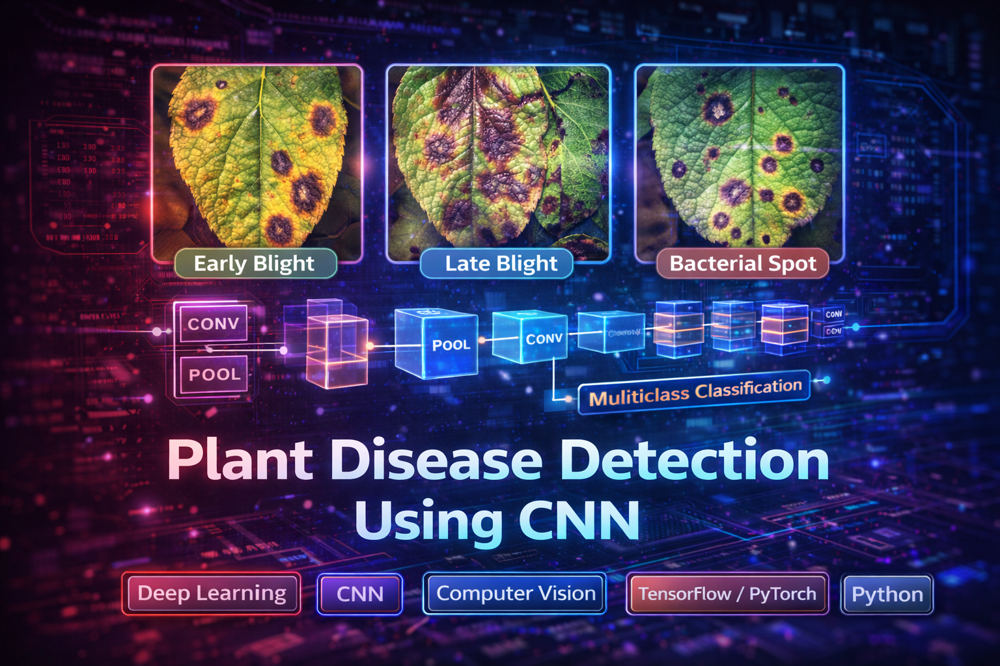

Projects
Here are some of my recent works

Agentic RAG Knowledge Assistant
Built an agentic Retrieval-Augmented Generation (RAG) system that intelligently retrieves and reasons over custom project data including READMEs and technical documentation. Implemented LLM-powered workflows to deliver grounded, context-aware responses while reducing hallucinations. Designed with FastAPI and vector search to simulate a production-ready AI knowledge assistant.

Fine-Tuned LLaMA 3.2 for Domain-Specific Intelligence
Fine-tuned the LLaMA 3.2 large language model on custom datasets to improve domain-specific reasoning and response accuracy. Implemented an optimized training pipeline with parameter-efficient techniques, reducing compute requirements while enhancing model performance. Designed for real-world deployment with a focus on reliability, contextual understanding, and scalable inference.

Deepfake Image Detection System
Developed an AI-powered deepfake detection system capable of identifying manipulated images using deep learning techniques. Built a high-performance FastAPI backend to handle real-time inference, enabling secure and scalable image verification. Designed to support AI safety initiatives by improving digital content authenticity and reducing misinformation risks.

Campus AI — Agentic RAG University Assistant
Building an agentic Retrieval-Augmented Generation (RAG) system designed to function as an intelligent university assistant. The system retrieves and reasons over institutional data including websites, academic resources, and policy documents to deliver accurate, context-aware responses. Architected with scalable AI pipelines to support multi-step reasoning, reduce hallucinations, and enhance student support through reliable knowledge retrieval.

Plant Disease Detection Using CNN
Developed a deep learning-based computer vision system capable of performing multiclass classification to identify plant diseases from leaf images. Designed and trained a Convolutional Neural Network (CNN) to extract complex visual patterns, enabling accurate and scalable disease prediction. Built with a focus on real-world agricultural support, demonstrating applied AI for early detection and crop health monitoring.